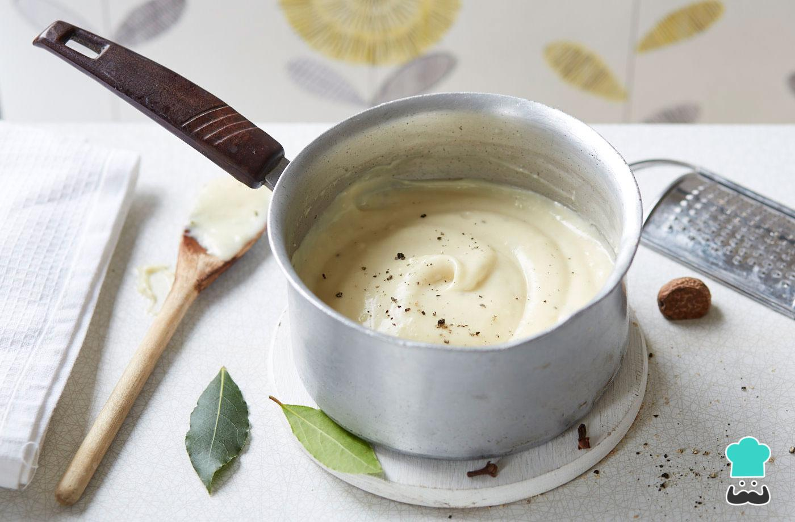

Basic Bechamel Sauce

Description
Bechamel is a creamy French white sauce used in many dishes, such as lasagna, gratin, and more! It is also used as a base sauce for other sauces like Bearnaise or mac and cheese.
Ingredients
- 5 tablespoons butter
- 1/4 cup all-purpose flour
- 1 quart milk
- 1 teaspoon salt
- 1/4 teaspoon freshly grated nutmeg
Directions
- Melt butter in a large saucepan over medium heat. Add flour and whisk into the melted butter until smooth. Cook and stir until flour turns a light, golden, sandy color, about 7 minutes.
- Increase heat to medium-high and slowly whisk in milk until thickened by the roux. Bring to a gentle simmer, then reduce heat to medium-low and continue simmering until the flour has softened and no longer tastes gritty, 10 to 20 minutes. Season with salt and nutmeg.